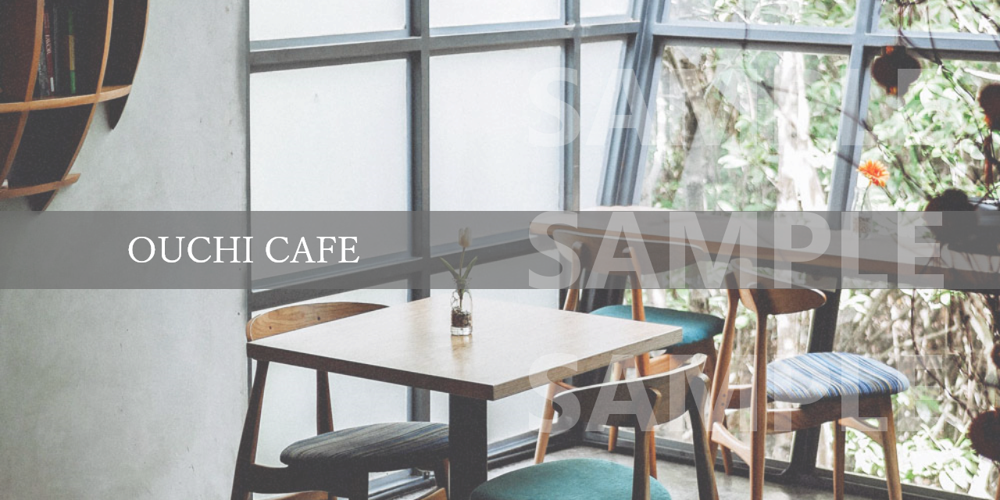
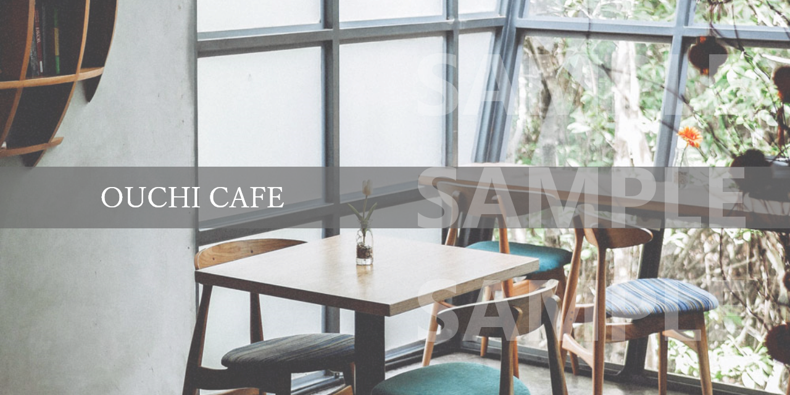

本店の主役は、なんといっても厳選されたコーヒー豆だけを使用した挽きたての香り高いコーヒーです。
パスタ専門店にもひけをとらない、こだわりの生パスタと自家製のソースを是非一度ご賞味ください。
スイーツ大好きのパティシエがお客様の笑顔を思い浮かべながら心をこめて作っています。※テイクアウト可
朝食だけでなく、ランチとしてもご満足いただける、新鮮野菜をたっぷりはさんだ自慢のサンドイッチです。
自家製のリコッタチーズを使ったふわふわのパンケーキです。ボリュームはありますが、女性おひとりでもペロリと食べられる美味しさです。
新鮮なフルーツをたっぷり使った、季節のフルーツタルトです。テイクアウト(お土産)としても非常に人気があります。